Before you start
Catalogist turns WordPress into your college's program and course catalog. You enter each course and program once, and every page that shows them stays in sync: change a course's credits, and every program map that includes it updates.
This guide takes you from a fresh install to a finished program page and a searchable list of programs. Steps marked optional can be skipped and done later. The screenshots use Harmon Ridge Technical College, a fictional college whose sample catalog you can download and import to follow along.
You'll need
- WordPress 6.6 or newer, with Catalogist installed and activated
- An account with the Administrator or Editor role (importing courses requires one of these)
- Your course list as a spreadsheet (CSV or Excel), if you'd like to import rather than type courses in
What Catalogist adds
Everything lives under the Catalogist menu in your dashboard: Programs, Courses, Credential Types, Departments, Career Areas, Delivery Modes, Map Templates, Import Courses and Settings. It also adds a Catalogist category of blocks for building program, course and catalog pages.
Step 1: Departments and course prefixes
Departments group your programs and courses. Each department can also claim course prefixes, the letters a course code starts with, so courses are filed automatically. For example, if Computer Information Systems claims CIS and NET, every course whose code starts with CIS or NET lands in that department.
- Go to Catalogist → Departments.
- Enter a department name, such as Computer Information Systems.
- In Course prefixes, enter the prefixes that belong to it, separated by commas:
CIS, NET. - Click Add New Department, and repeat for each department. A General Education department for shared courses (English, math, sciences) is often useful.
Each prefix belongs to one department. Giving a prefix to a second department moves it there.

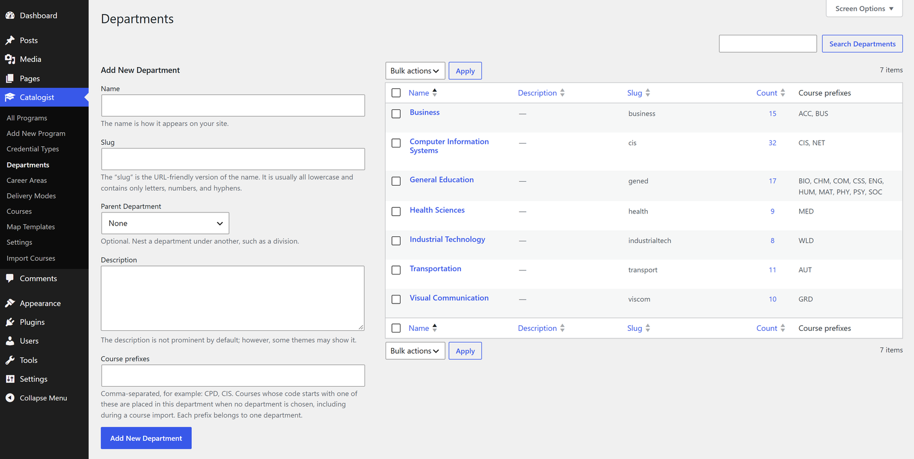
Tip: You can skip this step and set prefixes during the import instead (see step 2). Your choices there are saved to the departments the same way.
Step 2: Import your courses
If your courses are in a spreadsheet, import them all at once instead of entering them one by one. Your file can be CSV or Excel (.xlsx), with one course per row.
Choose the file
- Go to Catalogist → Import Courses and choose your file. It's read in your browser, and nothing is saved until you confirm the import.
- If your workbook has several sheets, choose the one with your courses under Sheet.
Match columns to course fields
- Check the Header row: the row with your column names. Catalogist finds it automatically, skipping titles or dates above it. If it guessed wrong, choose the right row.
- For each course field, choose the spreadsheet column it comes from. Columns are labeled with their letter, as in a spreadsheet ("C: Course Title"), and common names like "Cr Hrs" or "Prereqs" are matched for you. The First course row column shows a value from your file so you can check each match.
- Course code and Title are required.
- If your codes are split across two columns, like "CIS" and "220", match the letters to Subject prefix.
- Prerequisites can be a list of course codes. Any other wording, like "or instructor permission", is kept as a prerequisite note.
- Under Departments by course prefix, choose a department for each prefix in your file, or add a new department. These choices are remembered.
- Choose whether new courses are saved as drafts for review or published immediately, and whether courses that already exist (same course code) are updated or left unchanged.

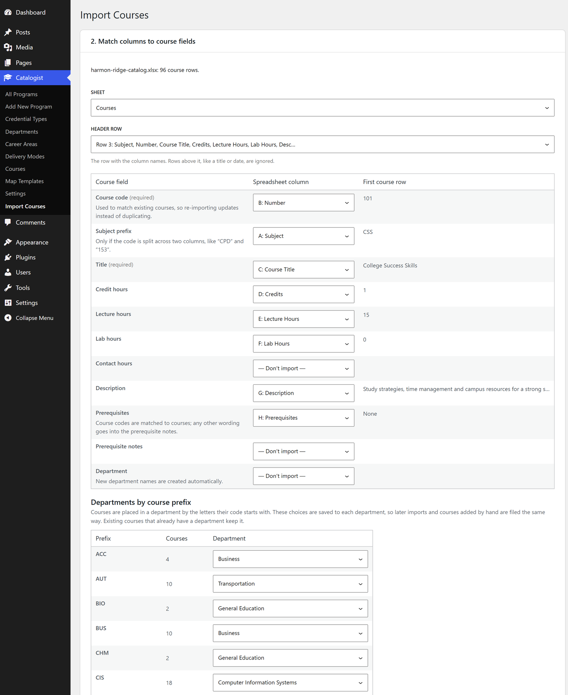
Preview and import
- Click Preview import. Every row is listed as Create, Update, Skip or Error, with the reason.
- If a course code appears on more than one row, choose which row to import, or none of them. The import can't start until each duplicate is decided.
- Click the Import button and keep the page open until it finishes.

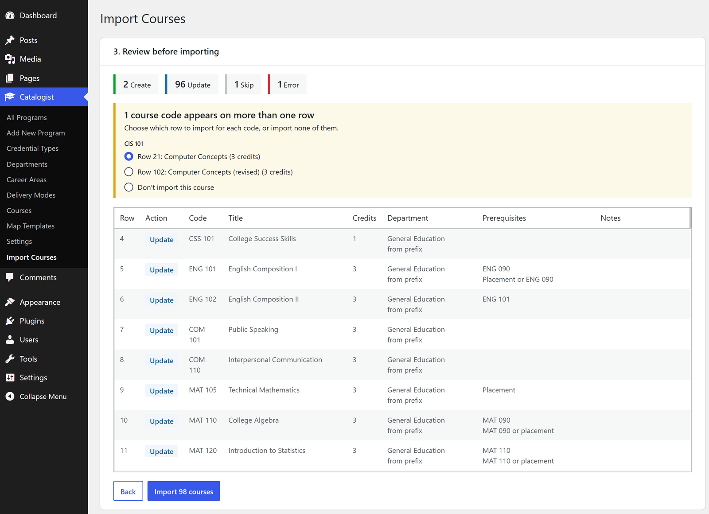
The summary lists what was created, updated and skipped. Prerequisite codes that didn't match any course are listed too and kept in the course's notes, so nothing is lost; import the missing courses and run the import again to link them.

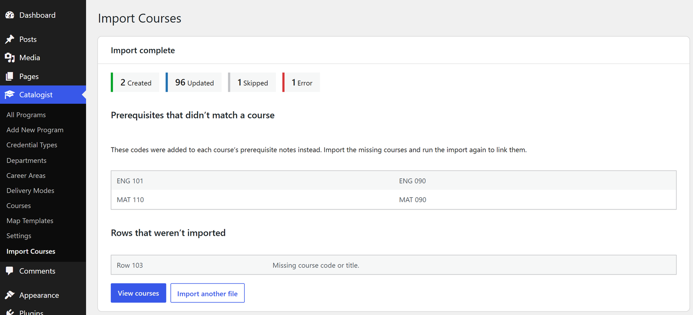
Tip: Re-importing an updated spreadsheet later updates your existing courses rather than duplicating them.
Step 3: Review and publish courses
If you imported courses as drafts, review them before publishing. Draft courses never appear on your public site, including in program maps, so publish them once they look right.
Find courses
Go to Catalogist → Courses. The list shows each course's code, credits, department and the programs that use it. Use the filters above the list to narrow it:
- All departments: one department's courses
- All programs: courses in a program's map, or Not in any program for courses no map uses yet
To publish several at once, tick them, choose Edit under Bulk actions, set Status to Published and click Update.
Edit a course
Open a course to check or change its details in the Course Details panel of the editor sidebar:
- Course code and credit hours
- Lecture, lab and contact hours (optional; click the line to show them)
- Course description
- Prerequisites: start typing a course code or title and pick from the list
- Prerequisite notes, for anything the list can't express, such as "or instructor permission"
The course page shows these automatically, through the Course Info and Course Description blocks.

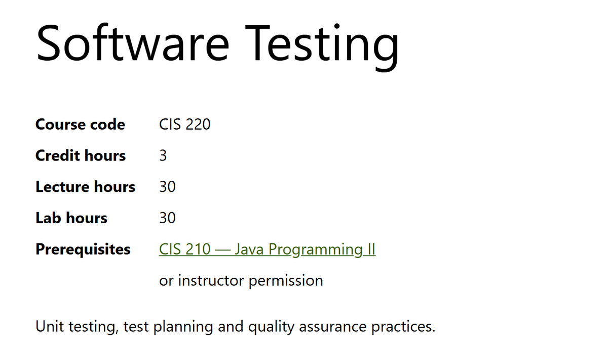
Adding a course by hand
Go to Catalogist → Courses → Add New Course, enter the title and fill in Course Details. If its code starts with a prefix a department claims, it's filed in that department automatically.
Step 4 (optional): Build a general education template
Most associate degrees share the same general education requirements. Build them once as a map template, then apply the template to each program's map instead of re-entering them.
- Go to Catalogist → Map Templates → Add New Map Template, and give it a name such as "AAS General Education".
- In the Template map box, click Create map. The map editor opens; it works exactly as described in step 6.
- Add terms and place the general education courses and choice slots in the semesters they're usually taken.
- Click Done, then Publish. Publishing is what saves the template.

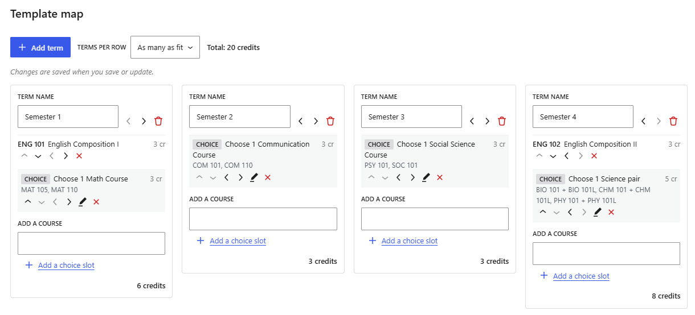
You'll apply the template in step 6. Applying it copies its entries into a program's map, so each program can then be adjusted on its own. Changing the template later doesn't change maps it was already applied to.
Step 5: Create a program
- Go to Catalogist → Add New Program and enter the program's name as the title.
- Type an overview in the first paragraph. New programs start with a ready-made layout below it (see step 8).
- In the editor sidebar, open the Program tab and tick the program's details in these panels:
- Credential Types: every credential the program offers, such as Associate of Applied Science and Technical Certificate
- Departments, Career Areas and Delivery Modes: these power the filters in the Program Finder
Program Details panel
Everything here is optional, and anything left empty isn't shown on the page:
- Start dates, such as "August (fall semester)"
- Enrollment notice, shown prominently on the program page and in the Program Finder, for example "Not accepting applications for Fall 2026."
- CIP code and CIP title
Credentials panel
Each credential you ticked gets its own section here, with:
- Length, such as "2 years"
- Short description (optional), one sentence shown with the credential
- Total credit hours, which the map editor checks your map against
- Pathways (optional; see step 7)
- The credential's program map (see step 6)

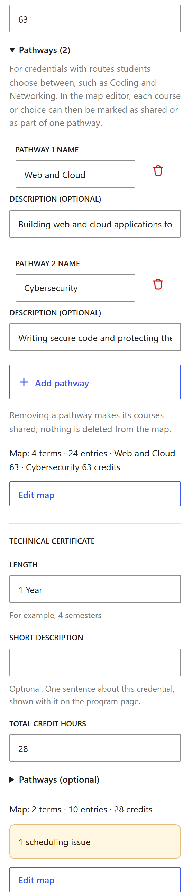
Click Publish (or Save draft) when you're done.
Step 6: Build the program map
Each credential has its own semester-by-semester map. In the Credentials panel, click Create map (or Edit map) under the credential. The map editor opens full screen.

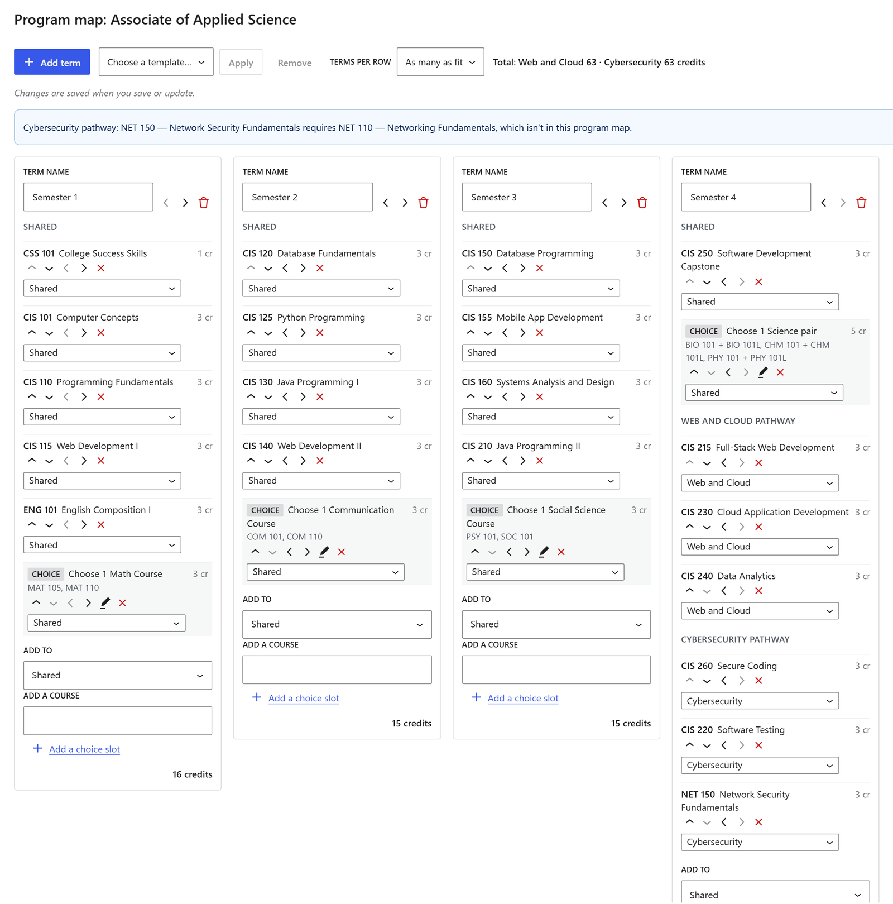
Terms and courses
- Click Add term for each semester. Rename a term by editing its name, and use the arrows beside it to reorder.
- In each term, use Add a course: start typing a course code or title and pick it from the list.
- Use the arrows on each entry to move it up or down, or to the previous or next term. The × removes it.
Each term shows its credit total, and the toolbar shows the map's total. If terms feel cramped, choose fewer under Terms per row in the toolbar; your choice is remembered in your browser for every map.
Choice slots
For requirements like "choose one communication course", click Add a choice slot in the term, then fill in:
- Label, such as "Choose 1 Communication Course"
- Credits the slot counts for
- Single-course options: the courses students can pick from. Leave everything empty for an open choice, like "Any approved humanities course".
- Course groups, for options taken together, such as a lecture and its lab. Click Add a course group and add both courses; each group counts as one option.
Click Done to close the slot, or its pencil button to reopen it.

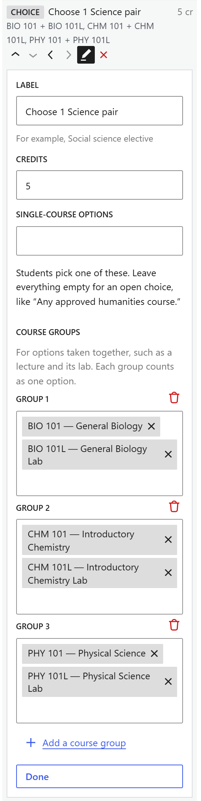
Applying a template
To add general education requirements from step 4, choose the template in the toolbar's Choose a template… list and click Apply. Its entries are copied into the matching terms, and courses already in the map are skipped. To take them back out later, choose the template and click Remove.
Checks as you go
The editor warns you when a course is scheduled in the same term as its prerequisite or before it, when the map doesn't add up to the credential's total credit hours, or when a course isn't published yet.
Saving
The map editor's Done button only closes the editor. Your map is saved when you click Update (or Publish) on the program.
Tip: For a credential that's mostly a subset of another, such as a certificate drawn from the associate degree's courses, use Copy map from… below the empty map, then remove what doesn't apply.
Step 7 (optional): Add pathways
Pathways are routes students choose between within one credential, for example a Web and Cloud pathway and a Cybersecurity pathway that share their first three semesters. One map holds both: shared courses are entered once, and each pathway's own courses are tagged.
Create the pathways
- In the Credentials panel, open Pathways (optional) under the credential.
- Click Add pathway, enter its name, and optionally a one-sentence description. Repeat for each pathway.
Tag courses in the map
- Open the map editor. Each term now groups its entries under Shared and each pathway's name.
- To add a course to a pathway, set the term's Add to list to that pathway first, then add the course or choice slot.
- To move an existing entry, change the pathway list under it.
Totals and checks now work per pathway: the toolbar shows each pathway's credits, and a prerequisite warning names the pathway it affects.
On the program page
Visitors see a Pathway switcher above the map: "All" shows every pathway's courses under labeled groups, and choosing one hides the others and updates the credit totals.

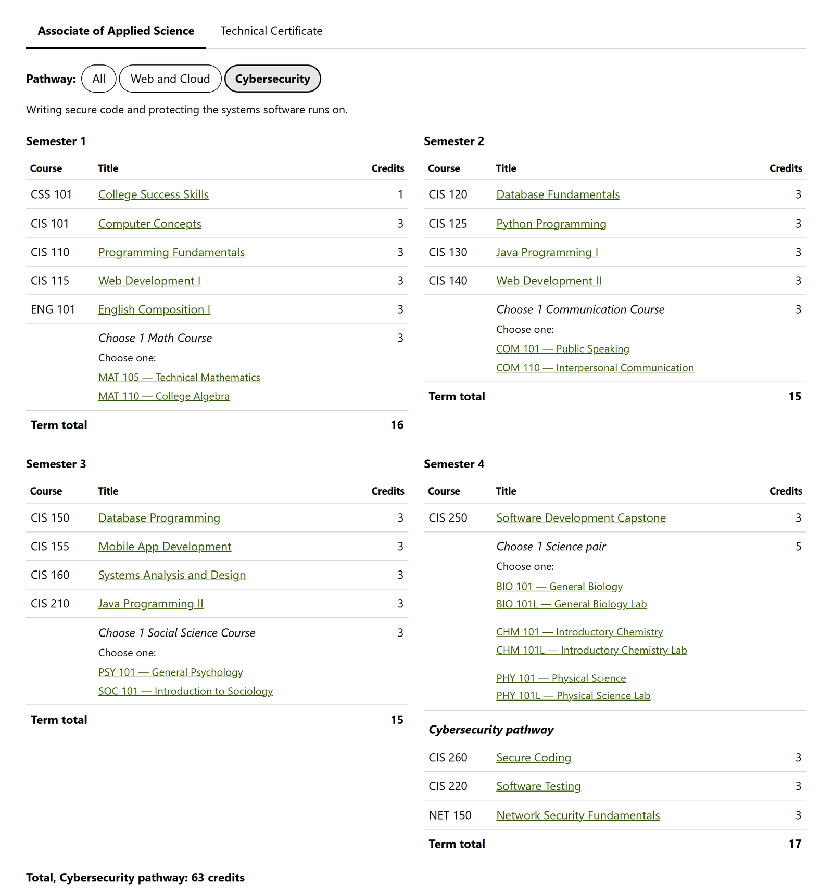
Removing a pathway turns its courses into shared ones; nothing is deleted from the map.
Step 8: Lay out the program page
New programs start with a ready-made layout: your overview, then Program Details, a "Program Map" heading, the Program Map, and three Program List blocks for outcomes, careers and certifications. The blocks fill themselves in from what you entered in the sidebar, so you rarely need to change the layout.

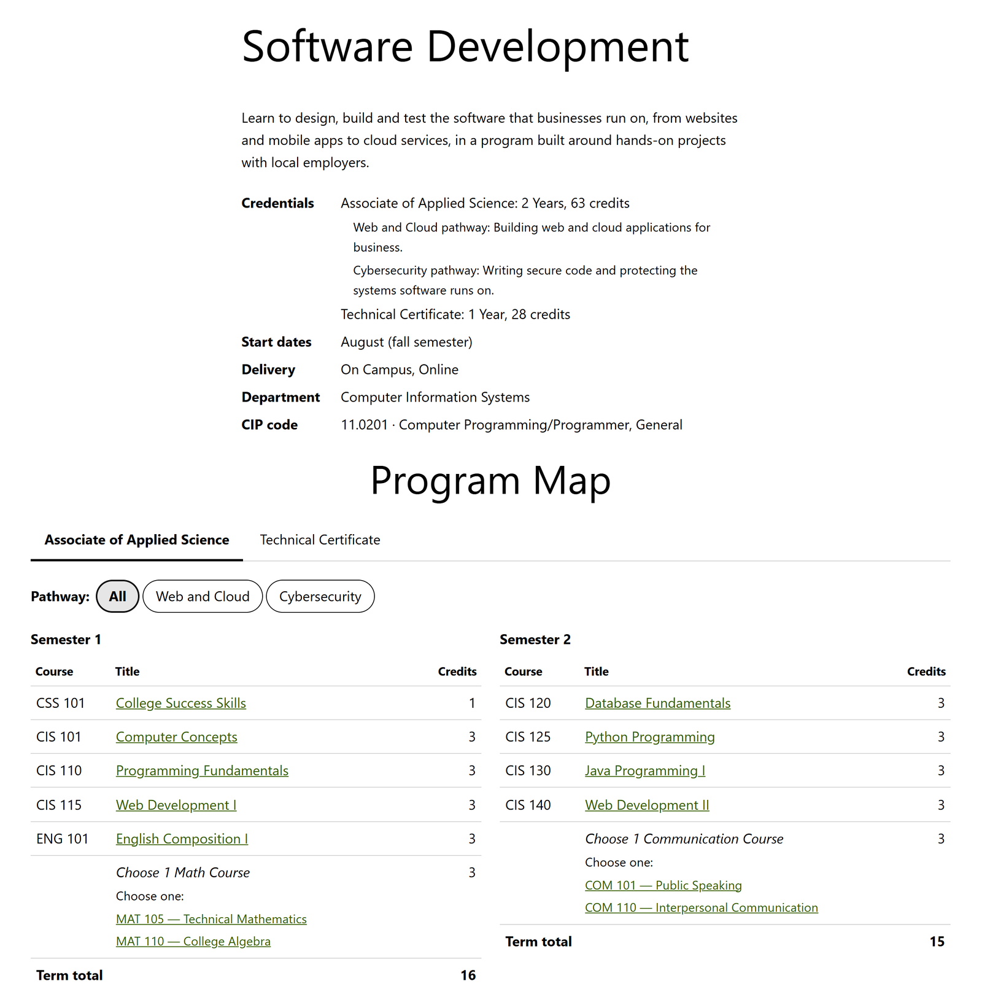
Outcomes, careers and certifications
In the sidebar's Outcomes & Careers panel, enter program outcomes, careers, certifications graduates earn, and certifications they can also earn, one per line. Each list appears on the page with its heading; an empty list, heading included, doesn't appear at all.
When pasting a list from a spreadsheet cell, check the first and last lines: Excel wraps a multi-line cell in quotation marks when you copy it.
Program Map settings
Select the Program Map block to adjust it in the sidebar:
- Credential: show every credential's map, or just one
- Show multiple credentials as: tabs (one map at a time) or stacked
- Semesters per row: fewer per row gives each semester more room
- Course links and term credit totals can each be turned off
For more room, set the block's alignment to Wide or Full width in its toolbar.
Adding blocks to other pages or older programs
All Catalogist blocks are in the Catalogist category of the block inserter (the + button).

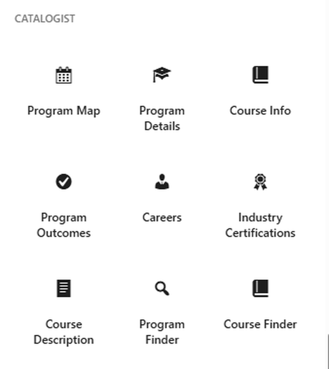
Tip: If your theme shows a "Written by" line on program pages, see Troubleshooting.
Step 9: Set up the Programs page
The Programs page is where students browse all your programs, with search and filters.
Create the page
- Go to Pages → Add New Page and give it a title, such as "Program Offerings".
- Add the Program Finder block from the Catalogist category.
- In the page's settings, set its URL slug, such as
program-offerings, and publish.
The finder lists every published program as a card and adds a search box and filters for credential, career area and delivery mode. Each filter appears only once programs use at least two of its options. In the block's settings you can turn the search box, each filter and the program summaries on or off. Setting the block to Wide fits three cards per row.

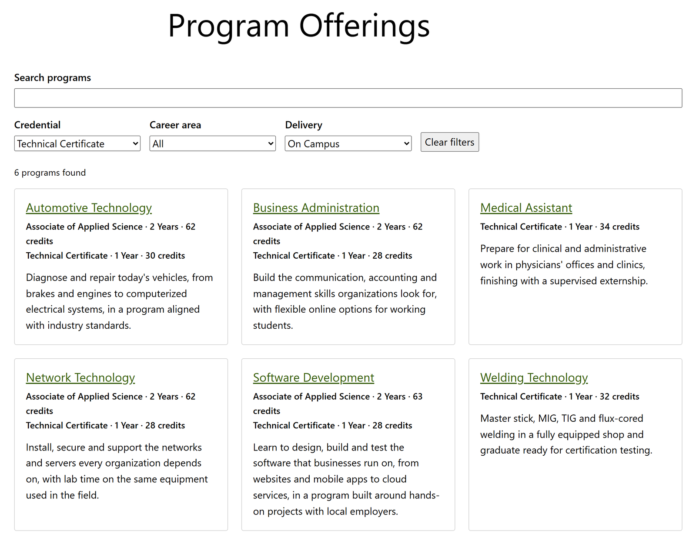
Tell Catalogist about the page
- Go to Catalogist → Settings.
- Under Programs page, choose your page and click Save Changes.
Your page now owns its address, and program pages are nested under it, such as /program-offerings/software-development/. Keep other pages out from under it, since its child pages can't be reached.

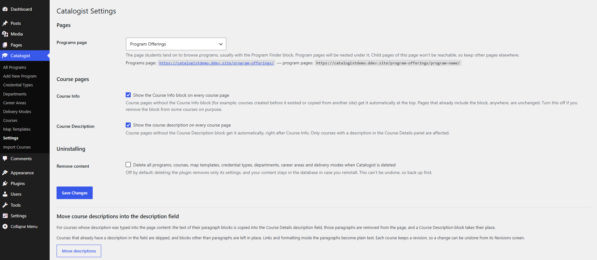
Tip: If the address still shows a list titled "Archives: Programs", go to Settings → Permalinks and click Save Changes once.
Step 10 (optional): Add a course catalog page
The Course Finder block shows every published course in one table (code, title, credits and department), sorted by course code.
- Create a page, such as "Course Catalog", and add the Course Finder block.
- Visitors can search by code or title ("CIS 220", "cis220" and "testing" all work) and filter by department or program.
- In the block's settings, turn the search box, each filter, the Department column and course links on or off.
The Program filter also makes a handy link: filter the catalog to one program, copy the page address, and link to it from that program's page to show its full course list.
In both finders, the chosen filters are kept in the page address, so a filtered view, such as all online certificates, can be bookmarked or linked from another page.
Troubleshooting
I changed a program map, but the page didn't change. The map editor's Done button only closes the editor. Click Update on the program to save.
A course is in the map, but it isn't on the public page. The course is probably still a draft; drafts never appear publicly. Publish it. The map editor lists unpublished courses in its warnings.
The map's credit total doesn't match the credential's. Check that every course has its credit hours, that each choice slot has credits set, and that no course is missing from the map. The map editor shows both totals, per pathway.
My theme shows "Written by" or "Posted… by" with no name on program or course pages. That text comes from your theme's template for posts, which expects an author, categories and tags. In a block theme, go to Appearance → Editor → Templates, add templates for "Single item: Program" and "Single item: Course", and remove that section from each.
My Programs page shows "Archives: Programs" instead of my page. Choose your page under Catalogist → Settings → Programs page. If it still doesn't show, go to Settings → Permalinks and click Save Changes.
I updated Catalogist and my settings are gone. Deleting the plugin removes its settings. To update by hand, upload the new version under Plugins → Add New → Upload Plugin and choose Replace current with uploaded instead of deleting first. Updates through Update now keep your settings.
What happens to my content if I delete Catalogist? Only its settings are removed; programs, courses and departments stay in case you reinstall. To delete everything, turn on Remove content under Catalogist → Settings before deleting the plugin. This can't be undone, so back up first.